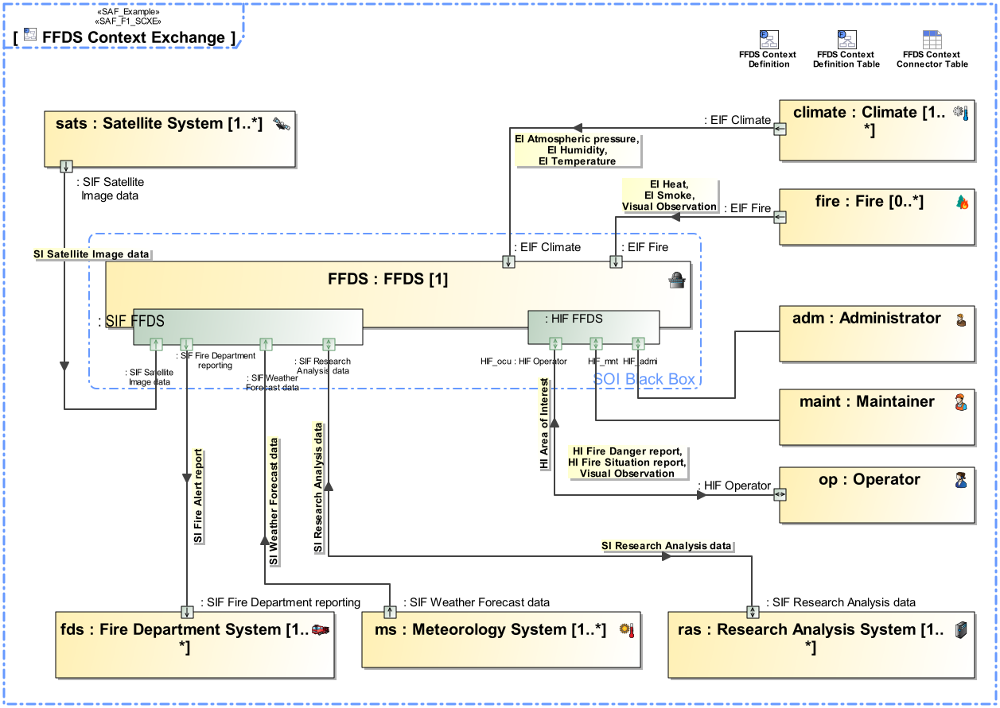

F1_SCXE System Context Exchange Viewpoint
| Domain | Aspect | Maturity |
|---|---|---|
| Functional | Context & Exchange |

The System Context Exchange Viewpoint serves for the identification and definition of external interfaces of the SOI that are used to interact, e.g., users, external systems, and other external entities defined in the given context of the SOI. The System Context Exchange Viewpoint
The System Context Exchange Viewpoint supports the “prepare for system requirement definition” activity included in the “System Requirements Definition Process” activities of the INCOSE SYSTEMS ENGINEERING HANDBOOK 2023 [§2.3.5.3] and contributes to the artifact “System Requirements Definition Report”.
An internal block diagram (IBD) - associated to a system context - featuring the SOI, the system context elements, and the connectors for each identified interface from SOI to the respective context elements. An interface is an interaction point for interaction of the SOI to with context elements. Item flows are defined for each exchange on the identified interface. Connectors/ports may contain reference to the interface documents if applicable. Ports may be structured as appropriate to manage and structure the information. Note: more than one IBD focused on different areas of interest may be used in oder to keep the view comprehensive. Depending on the Stakeholder concerns the item exchange information might be suppressed.
A tabular format listing the identified interfaces of the soi (ports), referencing interface definitions (port types) ,connections (connector) to system context elements, and information exchange (item flows) conveyed over these connections. It is advised to have multiple tables focusing on certain aspects to keep the view comprehensive, e.g. table focusing on contexts or on certain interface partners.
The following Stereotypes / Model Elements are used in the Viewpoint: